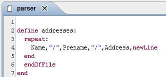
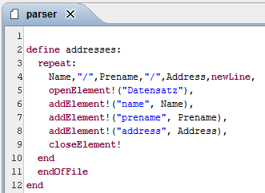
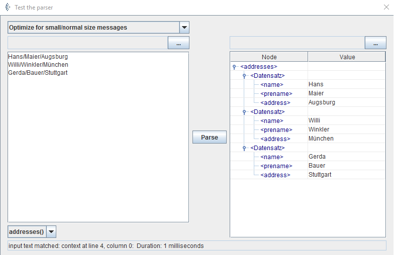
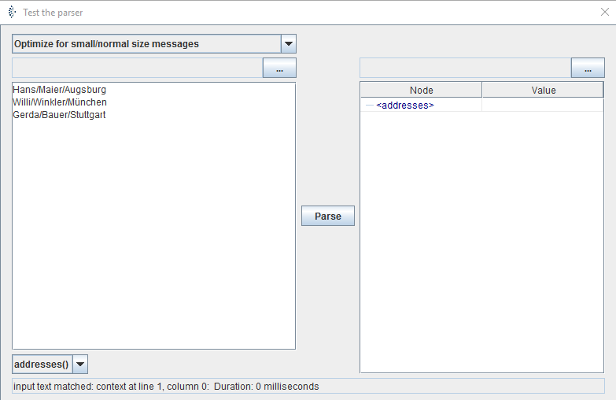
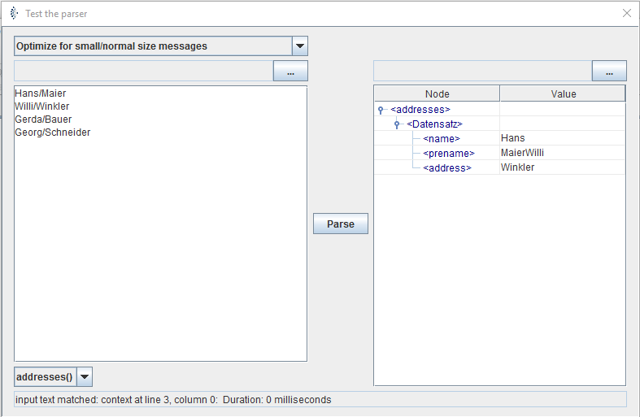
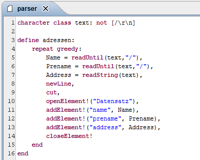

Examples

Topic content
Easy
A parser description is a scenario element that describes a character stream.
For example, the input is the following:
Hans/Maier/Augsburg Willi/Winkler/München Gerda/Bauer/Stuttgart |
So it is needed to create the following parser description:

To test the program, click on the testbutton ( lightning symbol) and copy the input example in the left field.
|
There must be a return after the last line. |
After clicking on parse, a evidence is displayed below. If the evidence is "input txt matched: context at line4, column 0" the parsing worked. If the evidence is "parse failed", there must be an error in your example data. Please check that there is only one return after the last line.
After parsing the text correctly, the right side of the testpanel is empty. To change that, a change in the parser description is needed.
To give out the incoming data, you need to change the description as shown below:

If the text is parsed now, the following will be shown:

"addElement!" is used to insert the variables in a XML tree.
|
Please note: variable names always begin with a capital letter, while the names of procedures, functions and definitions begin with lowercase. |
If the "endOfFile" is deleted, the following will happen:

It can be seen that there is no error message, but the right side is empty. The evidence shows, that the parser did not read anything. This happens because the loop is passed through zero times. If "endOfFile" is added to the coding, the condition can only be fulfilled, if every line is read in.
|
Instead of "repeat", it is also possible to use "repeat greedy" and leave "endOfFile" out. This will lead the parser to read every line that is possible. If there are lines after the text, that don't fit the description, there will be no error. "Repeat greedy" does not need an "endOfFile". It will just stop if a line does not fit in the description. |
But the used code is not distinct. If the addresses for example are left out in the example text, the following will happen:
To prevent this from happening, the coding must be changed like below:

We declare that the class text contains every character, except of return and slash. The function "readUntil" reads in the characters, until the declared field delimiter appears. The text is returned without the field delimiter.
In the coding below, the function "readString" is also used. This function does not need a field delimiter, but works similar to "readUntil". The function is for example useful, if return is used as field delimiter. "newLine" can be used with Windows and Linux, because return has different values in both operating systems. If you want to use "readUntil" you need to add "\r\n" as field delimiter.
|
"ReadUntil" and "readString" are functions, because they have return values. "Read", which was used in the first example is no function because it has no return value. |
The example above has another peculiarity. The invocation of "cut". "Cut" cuts the input so the parser cannot go back and there is no need to hold the whole data in the memory. This saves resources.
|
The real meaning of cut can only be understood, if more possibilities of the parser language are used (more is explained in the second example). The parser language resembles the parser language prolog and uses backtracking to match the input with a model. Cut has the same meaning as a Prolog goal. |
Complex
The example input of the second example is a property file. For example this can be used:
############################################################ # Global properties ############################################################
# "handlers" specifies a comma separated list of log Handler # classes. These handlers will be installed during VM startup. # Note that these classes must be on the system classpath. # By default we only configure a ConsoleHandler, which will only # show messages at the INFO and above levels. # handlers= java.util.logging.ConsoleHandler # handlers= java.util.logging.FileHandler
handlers=java.util.logging.FileHandler
java.util.logging.FileHandler.pattern = C:/temp/Orchestra/log/Orchestra%g.log java.util.logging.FileHandler.limit = 50000 java.util.logging.FileHandler.count = 2 java.util.logging.FileHandler.formatter = java.util.logging.SimpleFormatter # Default global logging level. # This specifies which kinds of events are logged across # all loggers. For any given facility this global level # can be overriden by a facility specific level # Note that the ConsoleHandler also has a separate level # setting to limit messages printed to the console. .level= INFO |
The input consists of many lines. Each of the line can be categorized in one of the following models:
•blank lines, that consist of nothing but blanks
•comments, that start with a #
•key value pairs
So the parser description could look like this:
character class linetext: not [\r\n] character class name: [A-Za-z_0-9.] character class blanks: [ \t]
define propertyfile: repeat greedy: line end end
define line: "#", linetext*, newLine end
define line: blanks*, newLine end
define line:
blanks*, Key = readString(name), blanks*, "=", blanks*, Value, blanks*, newLine
cut, openElement! ("Record"), addElement!("key", Key), addElement!("value", Value), closeElement! end |
In contrast to the first example, this parser description has more definitions. Which definition is used for the whole input is declared in the configuration of the deserialiser. Per default it is the first definition of the text (e.g. here: "propertyfile").
It can also be seen that line is defined three times. In the terminology of parser languages, this is called a goal.
The first definition tries to fulfill the goal "line" as often as possible. To fulfill the goal, the parser tries every definition of line sequentially. It begins with checking if the line has a hashtag in the front, if it does, the first description is fulfilled. If not, it checks if the line only consists of blanks and tabs. If either of them is fulfilled, it will check if the line is a key value pair.
The line "Value, blanks*, newLine" needs to be explained. The line can also be written as "Value = readString(linetext), newLine". If this would be done, the result would also contain of all spaces that are behind the letters. The class "linetext" also accepts spaces. If the first expression is used, this does not happen, in the first case, this can also be written as read(Value), readString(blanks), newLine , read(Value) will be tried as often, as the conditions behind are not fulfilled( till the end of the line, it only consists of spaces and the return). In this case, all spaces behind the text will not be read in.
The crucial difference between goals and functions is, that a goal can be tried many times,if all following goals cannot be fulfilled. ( This is called backtracking)
|
The use of functions is not as elegant as using goals, but it is more efficient. |
If functions are used instead of goals in the example, the function "trim" can be used to trim all spaces from the text. Value = trim(readString(linetext)), newLine would be the right way to use trim in this example.